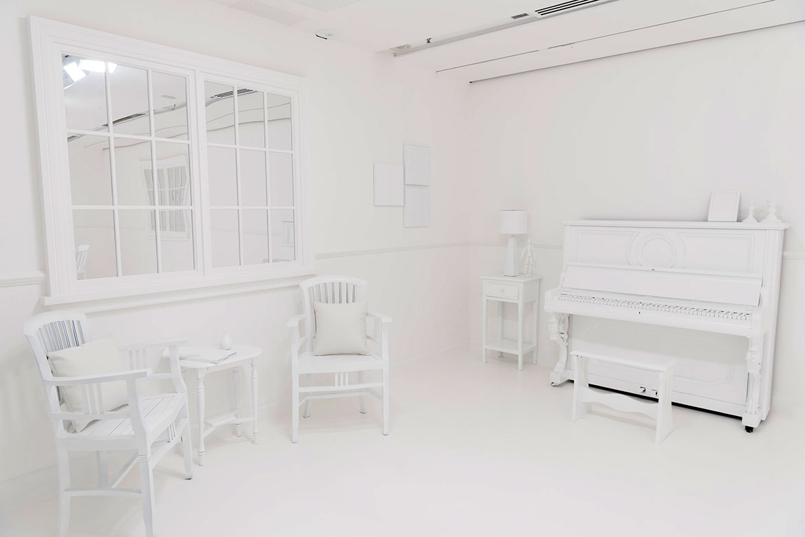

Pictured here is Japanese artist, Yayoi Kusama's Obliteration Room. Kusama is well known for using her art to cope with mental illness and this project aims to recreate that theraputic art experience.
Use the art canvas to portray your negative feelings and anxious energy.
Then press the obliterate button to get rid of those feelings with the same colorful dots used in Kusama's work.